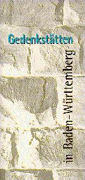

|
Deutsche Links - Gedenkstätten
Letzte Aktualisierung und Überprüfung: 11. Januar 1998
Allgemeines
Forschung
Widerstand


Die Landeszentrale für politische Bildung hat Anfang 1997
einen Gedenkstättenführer
für Baden-Württemberg
herausgebracht. Dieser Gedenkstättenführer ist
zusammen mit einem Literaturverzeichnis Gedenkstätten in Baden,
Württemberg und Hohenzollern im "Dritten Reich" sowie weiteren Links zum
Thema im Internet abrufbar. Gedenkstätten erhalten hier auch die Möglichkeit ihre Informationen ins Internet zu stellen.
Eine Übersicht aller Gedenkstätten für NS-Opfer in Deutschland
erarbeit von der "Stiftung Topographie des Terrors". Leider ist das Design der Seite etwas
merkwürdig, sodaß man diese Seite guten Gewissens nur Leuten mit einem schnellen Internetzugang
empfehlen kann ...
Arbeitsgemeinschaft
der KZ-Gedenkstätten
Gedenkstätte
Deutscher Widerstand
Auschwitz - Endstation Vernichtung
ist eine Ausstellung der Uni Linz (Österreich) über das Konzentrationslager Auschwitz.
z.B. Dachau ist eine Seite
eines Arbeitskreises Dachauer Bürger die genug von der Verdrängung und Schönrednerei
dieses Stücks finsterer Geschichte vor der eigenen Haustür hatten
Seit August 1997 gibt es nun eine
offizielle Seite der KZ-Gedenkstätte Dachau und befindet sich im Aufbau.
KZ-Gedenkstätte-Flossenbürg:
"Von 1938 bis 1945 existierte in Flossenbürg (Bayern - nördliche Oberpfalz) ein Konzentrationslager. Rund 100.000
Menschen waren im Haupt- und den mehr als 100 Außenlagern inhaftiert. Mindestens 30.000 überlebten den Terror
nicht. Heute erinnert eine Gedenkstätte an das Leid und den Tod der Häftlinge."
Gedenkstätte Froslev, Ladelund, Schwesing
KZ-Gedenkstätte Neuengamme
© Ralf P. Graf
Zurück zum Seitenanfang
|